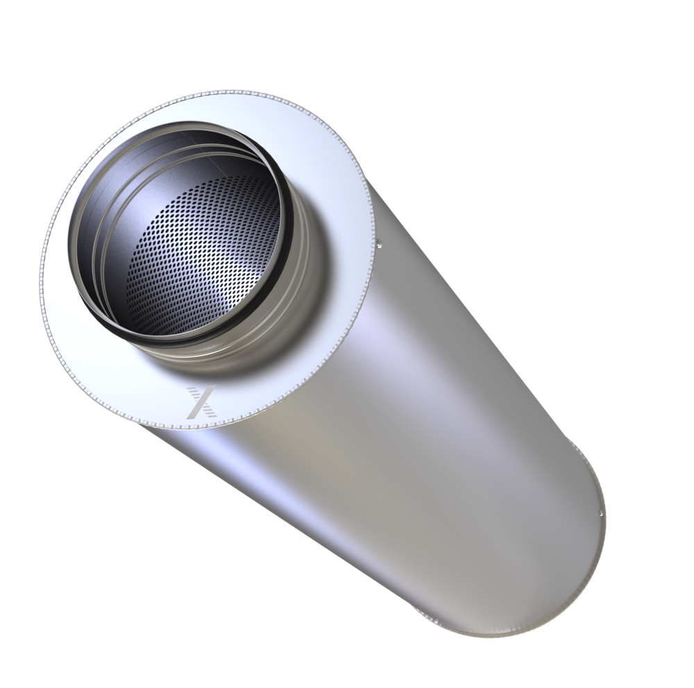

- Назначение
- Снижение шума вентиляторов, VAV/CAV-регуляторов и круглых воздуховодов.
- Исполнение
- Круглый жёсткий корпус, оцинкованная или нержавеющая сталь.
- Подбор
- По расходу, требуемому затуханию, допустимому сопротивлению и монтажной длине.
- Применение
- Общеобменная вентиляция, кондиционирование и специальные системы.
CA удобно применять совместно с круглыми VAV/CAV-регуляторами TROX.